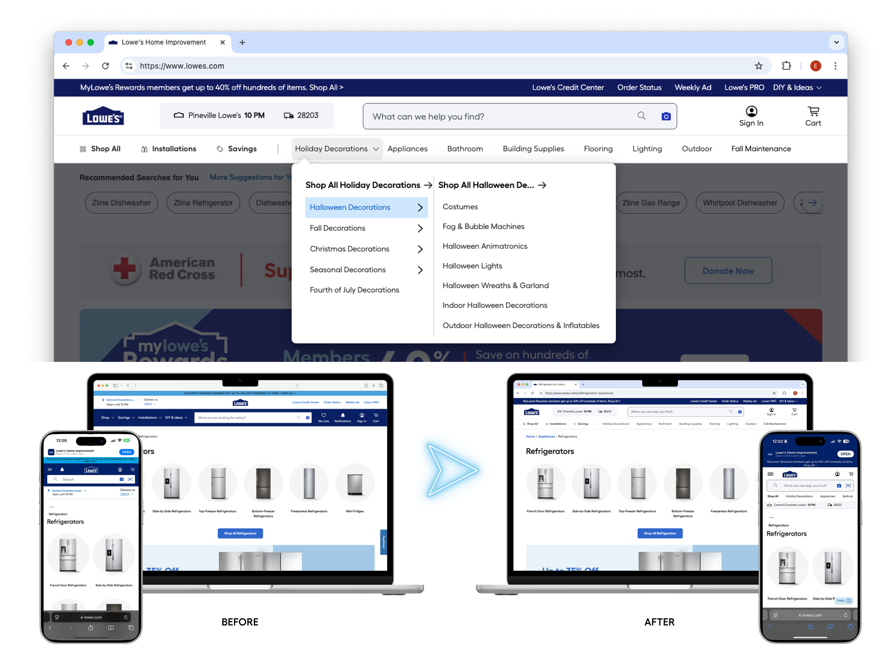
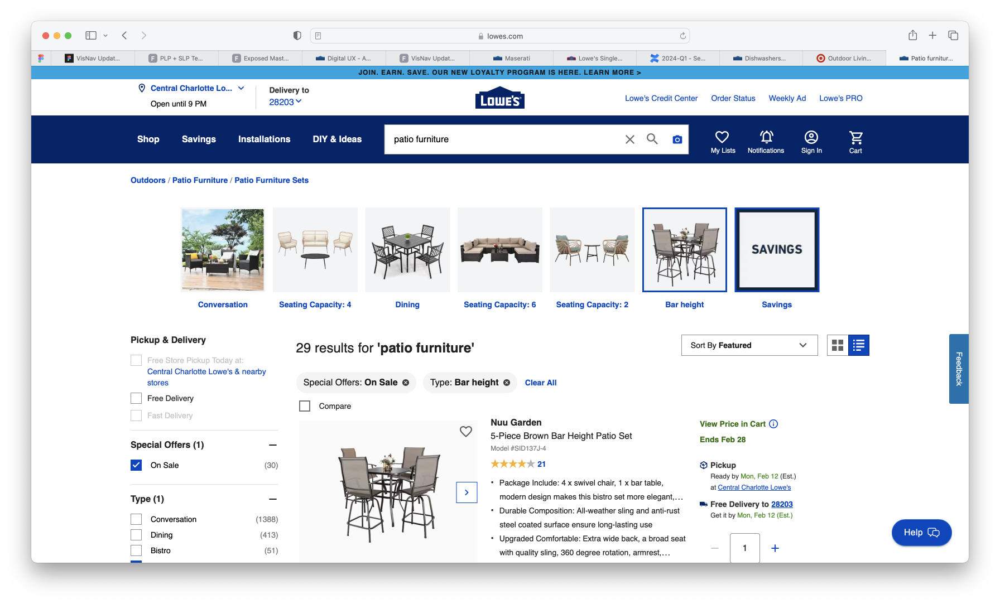
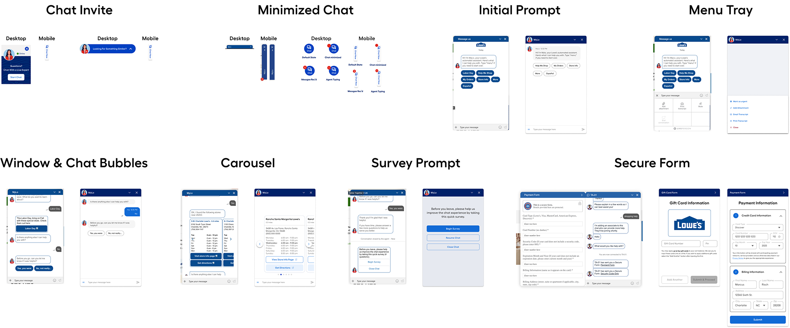
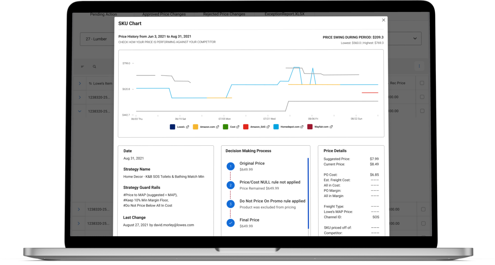

I design end-to-end product experiences at scale — from navigation systems serving 100M+ sessions to internal tools that eliminate hours of daily manual work. I lead with research, move fast through systems thinking, and ship work that compounds.

Rebuilt the highest-traffic component on Lowes.com — the entry point for every customer journey. Added Quick Nav, restructured hierarchy, and shipped across desktop and mobile.

Transformed static filter chips into a contextual, dynamic navigation system that updates in real-time as customers refine their search — stitching the shopping journey together.

Replaced a third-party chatbot with a fully in-house system aligned to V3 design standards. 1.5B total visits, 4.7M chat participants.

Digitized the daily exception price report workflow — eliminating hours of manual Excel work and creating a full audit trail for pricing decisions.
I'm a Senior Product Designer at Lowe's with 5 years of experience designing for one of the highest-traffic retail platforms in the country. I care about the craft of interaction design and the discipline of measuring what ships — not just what's shipped.
I'm a Sr. Product Designer open to conversations about the right next opportunity where design sits close to strategy.
Full bio & résumé →